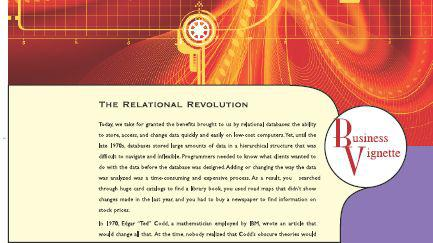
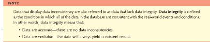
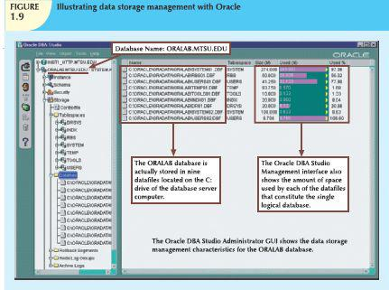
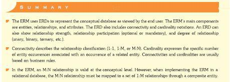
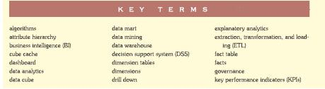
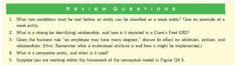
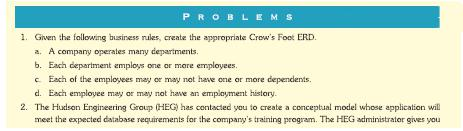

Business Vignettes highlight topics in a real-life setting.
Online Content Boxes draw attention to material at www.cengagebrain.com for this text and provide ideas for incorporating this content into the course.

Notes highlight important facts about the concepts introduced in the chapter.

A variety of four-color figures, including ER models and implementations, tables, and illustrations, clearly illustrate difficult concepts.

A robust Summary a the end of each chapter ties together the major concepts and serves as a quick review for students.

An alphabetic list of Key Terms summarizes important terms.

Review Questions challenge students to apply the skills learned in each chapter.

Problems become progressively more complex as students draw on the lessons learned from the completion of preceding problems.